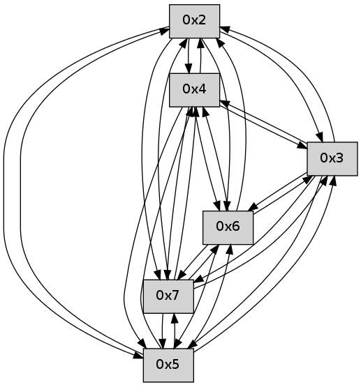

>> << IDX [start] -25 -5 +0 +5 +25 +100 [30.3630681038]
 Previous packets
----------------------------------------------------------------------
25.268039 beacon01(faad) #0 coord=01,02,03,04,05,06,07 cycle=496.0ms assoc
-- color-indic=0 64 c9 15
25.278007 beacon02(faad) #0 coord=01,02,03,04,05,06,07 cycle=496.0ms assoc 64 9e d0
25.288008 beacon03(faad) #0 coord=01,02,03,04,05,06,07 cycle=496.0ms assoc 64 32 72
25.298009 beacon04(faad) #0 coord=01,02,03,04,05,06,07 cycle=496.0ms assoc 64 45 07
25.308009 beacon05(faad) #0 coord=01,02,03,04,05,06,07 cycle=496.0ms assoc 64 e9 a5
25.318009 beacon06(faad) #0 coord=01,02,03,04,05,06,07 cycle=496.0ms assoc 64 0c 4a
25.328009 beacon07(faad) #0 coord=01,02,03,04,05,06,07 cycle=496.0ms assoc 64 a0 e8
25.340355 [Hello(6): seq=7 sym=2,3,5,4,7 sysInfo= stat=2:6,0,0,0/3:6,0,0,0/5:6,0,0,0/4:5,0,0,0/7:3,0,0,0]
25.344774 [Hello(7): seq=7 sym=2,3,5,6,4 sysInfo= stat=2:7,0,0,0/3:6,0,0,0/5:6,0,0,0/6:2,0,0,0/4:5,0,0,0]
----------------------------------------------------------------------
25.834155 beacon01(faad) #0 coord=01,02,03,04,05,06,07 cycle=496.0ms assoc
-- color-indic=0 64 84 4f
25.844123 beacon02(faad) #0 coord=01,02,03,04,05,06,07 cycle=496.0ms assoc 64 d3 8a
25.854124 beacon03(faad) #0 coord=01,02,03,04,05,06,07 cycle=496.0ms assoc 64 7f 28
25.864124 beacon04(faad) #0 coord=01,02,03,04,05,06,07 cycle=496.0ms assoc 64 08 5d
25.874125 beacon05(faad) #0 coord=01,02,03,04,05,06,07 cycle=496.0ms assoc 64 a4 ff
25.884124 beacon06(faad) #0 coord=01,02,03,04,05,06,07 cycle=496.0ms assoc 64 41 10
25.894124 beacon07(faad) #0 coord=01,02,03,04,05,06,07 cycle=496.0ms assoc 64 ed b2
25.905207 [Hello(5): seq=8 sym=7,6,4,2,3 sysInfo= stat=7:7,0,0,0/6:7,0,0,0/4:2,0,0,0/2:2,0,0,0/3:2,0,0,0]
25.907105 [Hello(2): seq=8 sym=4,5,7,6,3 sysInfo= stat=4:4,0,0,0/5:3,0,0,0/7:7,0,0,0/6:7,0,0,0/3:2,0,0,0]
25.911409 [Hello(3): seq=8 sym=5,7,6,4,2 sysInfo= stat=5:3,0,0,0/7:7,0,0,0/6:7,0,0,0/4:1,0,0,0/2:2,0,0,0]
25.914417 [Hello(4): seq=8 sym=5,7,6,2,3 sysInfo= stat=5:3,0,0,0/7:7,0,0,0/6:7,0,0,0/2:2,0,0,0/3:3,0,0,0]
----------------------------------------------------------------------
26.400270 beacon01(faad) #0 coord=01,02,03,04,05,06,07 cycle=496.0ms assoc
-- color-indic=0 64 bf 79
26.410239 beacon02(faad) #0 coord=01,02,03,04,05,06,07 cycle=496.0ms assoc 64 e8 bc
26.420239 beacon03(faad) #0 coord=01,02,03,04,05,06,07 cycle=496.0ms assoc 64 44 1e
26.430238 beacon04(faad) #0 coord=01,02,03,04,05,06,07 cycle=496.0ms assoc 64 33 6b
26.440238 beacon05(faad) #0 coord=01,02,03,04,05,06,07 cycle=496.0ms assoc 64 9f c9
26.450239 beacon06(faad) #0 coord=01,02,03,04,05,06,07 cycle=496.0ms assoc 64 7a 26
26.460239 beacon07(faad) #0 coord=01,02,03,04,05,06,07 cycle=496.0ms assoc 64 d6 84
26.471635 [Hello(7): seq=8 sym=2,3,5,6,4 sysInfo= stat=2:7,0,0,0/3:7,0,0,0/5:7,0,0,0/6:2,0,0,0/4:6,0,0,0]
26.473683 [Hello(6): seq=8 sym=2,3,5,4,7 sym= sysInfo= stat=]
----------------------------------------------------------------------
26.966383 beacon01(faad) #0 coord=01,02,03,04,05,06,07 cycle=496.0ms assoc
-- color-indic=0 64 1e fb
26.976352 beacon02(faad) #0 coord=01,02,03,04,05,06,07 cycle=496.0ms assoc 64 49 3e
26.986353 beacon03(faad) #0 coord=01,02,03,04,05,06,07 cycle=496.0ms assoc 64 e5 9c
26.996352 beacon04(faad) #0 coord=01,02,03,04,05,06,07 cycle=496.0ms assoc 64 92 e9
27.006353 beacon05(faad) #0 coord=01,02,03,04,05,06,07 cycle=496.0ms assoc 64 3e 4b
27.016354 beacon06(faad) #0 coord=01,02,03,04,05,06,07 cycle=496.0ms assoc 64 db a4
27.026354 beacon07(faad) #0 coord=01,02,03,04,05,06,07 cycle=496.0ms assoc 64 77 06
27.037421 [Hello(5): seq=9 sym=7,6,4,2,3 sysInfo= stat=7:8,0,0,0/6:8,0,0,0/4:3,0,0,0/2:3,0,0,0/3:3,0,0,0]
27.039484 [Hello(2): seq=9 sym=4,5,7,6,3 sysInfo= stat=4:5,0,0,0/5:3,0,0,0/7:8,0,0,0/6:8,0,0,0/3:3,0,0,0]
27.041403 [Hello(4): seq=9 sym=5,7,6,2,3 sysInfo= stat=5:3,0,0,0/7:8,0,0,0/6:8,0,0,0/2:2,0,0,0/3:3,0,0,0]
27.046009 [Hello(3): seq=9 sym=5,7,6,4,2 sysInfo= stat=5:3,0,0,0/7:8,0,0,0/6:8,0,0,0/4:2,0,0,0/2:2,0,0,0]
----------------------------------------------------------------------
27.532496 beacon01(faad) #0 coord=01,02,03,04,05,06,07 cycle=496.0ms assoc
-- color-indic=0 64 25 cd
27.542466 beacon02(faad) #0 coord=01,02,03,04,05,06,07 cycle=496.0ms assoc 64 72 08
27.552465 beacon03(faad) #0 coord=01,02,03,04,05,06,07 cycle=496.0ms assoc 64 de aa
27.562466 beacon04(faad) #0 coord=01,02,03,04,05,06,07 cycle=496.0ms assoc 64 a9 df
27.572465 beacon05(faad) #0 coord=01,02,03,04,05,06,07 cycle=496.0ms assoc 64 05 7d
27.582465 beacon06(faad) #0 coord=01,02,03,04,05,06,07 cycle=496.0ms assoc 64 e0 92
27.592468 beacon07(faad) #0 coord=01,02,03,04,05,06,07 cycle=496.0ms assoc 64 4c 30
27.603862 [Hello(7): seq=9 sym=2,3,5,6,4 sysInfo= stat=2:8,0,0,0/3:8,0,0,0/5:8,0,0,0/6:3,0,0,0/4:7,0,0,0]
27.606228 [Hello(6): seq=9 sym=2,3,5,4,7 sysInfo= stat=2:7,0,0,0/3:8,0,0,0/5:8,0,0,0/4:7,0,0,0/7:4,0,0,0]
----------------------------------------------------------------------
28.098610 beacon01(faad) #0 coord=01,02,03,04,05,06,07 cycle=496.0ms assoc
-- color-indic=0 64 68 97
28.108578 beacon02(faad) #0 coord=01,02,03,04,05,06,07 cycle=496.0ms assoc 64 3f 52
28.118580 beacon03(faad) #0 coord=01,02,03,04,05,06,07 cycle=496.0ms assoc 64 93 f0
28.128580 beacon04(faad) #0 coord=01,02,03,04,05,06,07 cycle=496.0ms assoc 64 e4 85
28.138581 beacon05(faad) #0 coord=01,02,03,04,05,06,07 cycle=496.0ms assoc 64 48 27
28.148580 beacon06(faad) #0 coord=01,02,03,04,05,06,07 cycle=496.0ms assoc 64 ad c8
28.158580 beacon07(faad) #0 coord=01,02,03,04,05,06,07 cycle=496.0ms assoc 64 01 6a
28.170923 [Hello(5): seq=10 sym=7,6,4,2,3 sysInfo= stat=7:9,0,0,0/6:9,0,0,0/4:4,0,0,0/2:4,0,0,0/3:4,0,0,0]
28.174907 [Hello(4): seq=10 sym=5,7,6,2,3 sysInfo= stat=5:3,0,0,0/7:9,0,0,0/6:9,0,0,0/2:2,0,0,0/3:4,0,0,0]
28.179321 [Hello(2): seq=10 sym=4,5,7,6,3 sysInfo= stat=4:6,0,0,0/5:3,0,0,0/7:9,0,0,0/6:9,0,0,0/3:4,0,0,0]
28.183496 [Hello(3): seq=10 sym=5,7,6,4,2 sysInfo= stat=5:3,0,0,0/7:9,0,0,0/6:9,0,0,0/4:2,0,0,0/2:2,0,0,0]
----------------------------------------------------------------------
28.664726 beacon01(faad) #0 coord=01,02,03,04,05,06,07 cycle=496.0ms assoc
-- color-indic=0 64 53 a1
28.674693 beacon02(faad) #0 coord=01,02,03,04,05,06,07 cycle=496.0ms assoc 64 04 64
28.684694 beacon03(faad) #0 coord=01,02,03,04,05,06,07 cycle=496.0ms assoc 64 a8 c6
28.694695 beacon04(faad) #0 coord=01,02,03,04,05,06,07 cycle=496.0ms assoc 64 df b3
28.704697 beacon05(faad) #0 coord=01,02,03,04,05,06,07 cycle=496.0ms assoc 64 73 11
28.714696 beacon06(faad) #0 coord=01,02,03,04,05,06,07 cycle=496.0ms assoc 64 96 fe
28.724695 beacon07(faad) #0 coord=01,02,03,04,05,06,07 cycle=496.0ms assoc 64 3a 5c
----------------------------------------------------------------------
29.230840 beacon01(faad) #0 coord=01,02,03,04,05,06,07 cycle=496.0ms assoc
-- color-indic=0 64 3b 9a
29.240808 beacon02(faad) #0 coord=01,02,03,04,05,06,07 cycle=496.0ms assoc 64 6c 5f
29.250809 beacon03(faad) #0 coord=01,02,03,04,05,06,07 cycle=496.0ms assoc 64 c0 fd
29.260809 beacon04(faad) #0 coord=01,02,03,04,05,06,07 cycle=496.0ms assoc 64 b7 88
29.270809 beacon05(faad) #0 coord=01,02,03,04,05,06,07 cycle=496.0ms assoc 64 1b 2a
29.280809 beacon06(faad) #0 coord=01,02,03,04,05,06,07 cycle=496.0ms assoc 64 fe c5
29.290811 beacon07(faad) #0 coord=01,02,03,04,05,06,07 cycle=496.0ms assoc 64 52 67
29.303810 [Hello(3): seq=11 sym=5,7,6,4,2 sysInfo= stat=5:3,0,0,0/7:9,0,0,0/6:10,0,0,0/4:2,0,0,0/2:2,0,0,0]
29.306936 [Hello(4): seq=11 sym=5,7,6,2,3 sysInfo= stat=5:3,0,0,0/7:9,0,0,0/6:10,0,0,0/2:3,0,0,0/3:5,0,0,0]
----------------------------------------------------------------------
29.796954 beacon01(faad) #0 coord=01,02,03,04,05,06,07 cycle=496.0ms assoc
-- color-indic=0 64 00 ac
29.806923 beacon02(faad) #0 coord=01,02,03,04,05,06,07 cycle=496.0ms assoc 64 57 69
29.816923 beacon03(faad) #0 coord=01,02,03,04,05,06,07 cycle=496.0ms assoc 64 fb cb
29.826924 beacon04(faad) #0 coord=01,02,03,04,05,06,07 cycle=496.0ms assoc 64 8c be
29.836924 beacon05(faad) #0 coord=01,02,03,04,05,06,07 cycle=496.0ms assoc 64 20 1c
29.846923 beacon06(faad) #0 coord=01,02,03,04,05,06,07 cycle=496.0ms assoc 64 c5 f3
29.856923 beacon07(faad) #0 coord=01,02,03,04,05,06,07 cycle=496.0ms assoc 64 69 51
29.868961 [Hello(6): seq=11 sym=2,3,5,4,7 sysInfo= stat=2:9,0,0,0/3:10,0,0,0/5:9,0,0,0/4:9,0,0,0/7:4,0,0,0]
29.874196 [Hello(7): seq=11 sym=2,3,5,6,4 sysInfo= stat=2:10,0,0,0/3:10,0,0,0/5:9,0,0,0/6:4,0,0,0/4:9,0,0,0]